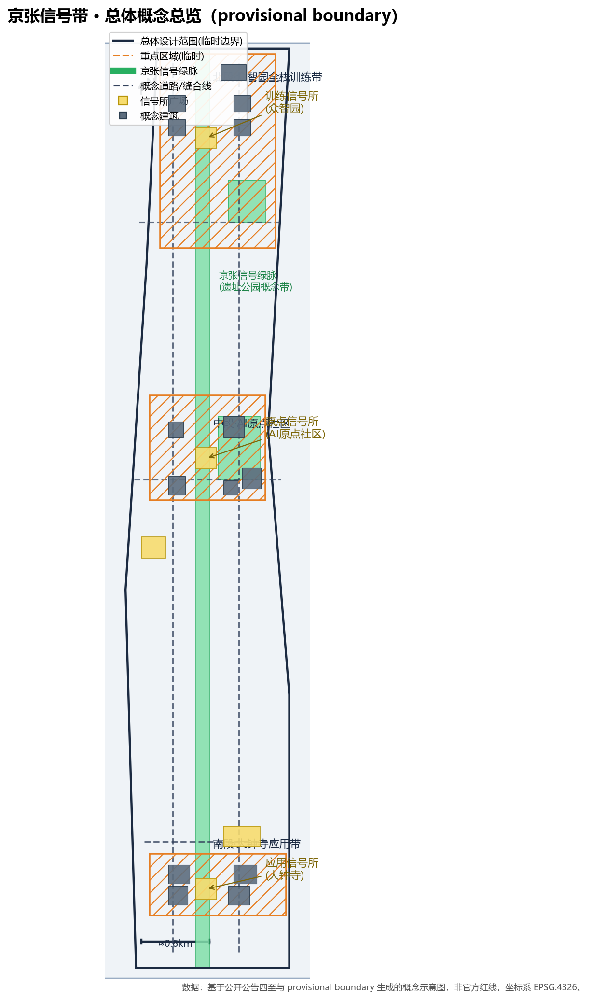
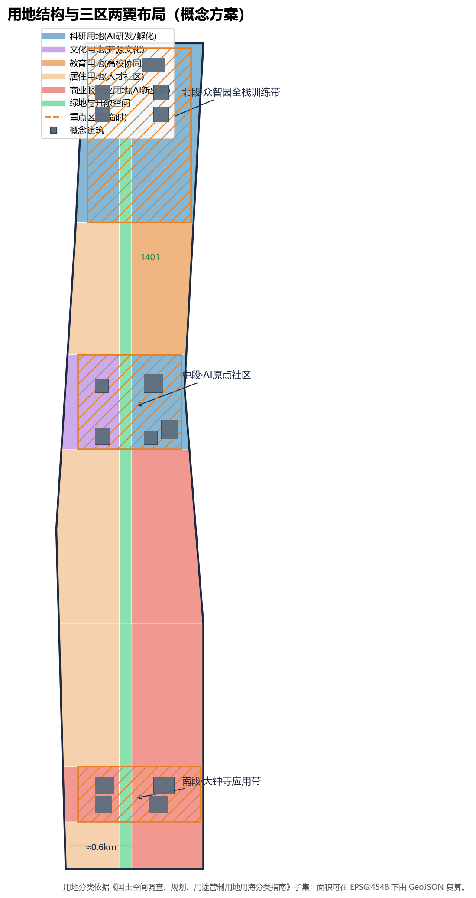
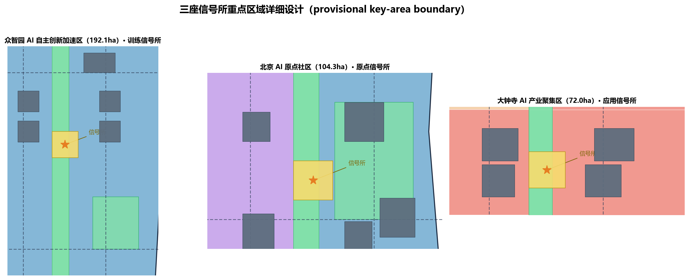
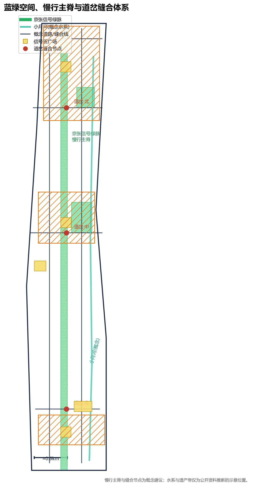
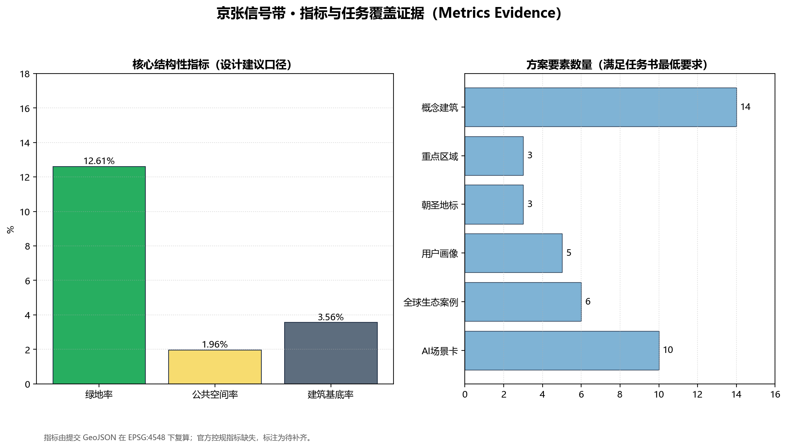

一线三所 · 道岔缝合 —— 百年京张AI创新带城市设计概念方案。全部空间建议为基于 provisional boundary 生成的概念建议，不替代法定规划。

统筹研究范围 43.6km² · 总体设计范围 11.4km² · 重点区域范围 368.4ha。

三座信号所重点区域；21 个用地分区无缝覆盖全部临时边界。

三座信号所重点区域；21 个用地分区无缝覆盖全部临时边界。

慢行主脊、三处东西缝合线、小月河蓝绿基底、信号所广场与道岔站场。
联锁：AI 服务与人工复核点绑定；区段：约 9.7km 绿脉划分为信号区段；调度：三座信号所分别调度训练、公共生活与应用。

14 栋概念建筑基底（约 40.6 万 m²）与更新项目清单、分期实施。
分期：2026-2029 原点社区；2029-2032 众智园训练带；2032-2035+ 大钟寺与全线贯通。
| # | 场景卡 | 三色信号机制 |
|---|---|---|
| 1 | AI巡检陪伴步道 | 绿：巡检，人工复核报警 |
| 2 | 模型评测开放日 | 黄：复核后公开 |
| 3 | 开源代码共创屏 | 绿：实时共创 |
| 4 | 智能终端体验街 | 黄：脱敏数据运营 |
| 5 | 无人配送交接点 | 红：超区段自动停运 |
| 6 | AI文旅导览 | 绿：人工投诉通道 |
| 7 | AR铁路历史漫游 | 黄：文保复核 |
| 8 | 智能楼宇节能调度 | 黄：能耗数据公开 |
| 9 | AI换乘引导 | 绿：人工兜底 |
| 10 | AI治理对话直播 | 红：未审内容不可出境 |
指标由提交 GeoJSON 在 EPSG:4548 下复算；官方控规指标待补齐。
| 指标 | 数值 | 单位 |
|---|---|---|
| site_area_sqm | 1.14128e+07 | sqm |
| green_ratio | 0.126107 | ratio |
| public_space_ratio | 0.019616 | ratio |
| building_footprint_area_sqm | 405746 | sqm |
| spine_length_m | 9716.43 | m |
| ID | 任务 | 交付 |
|---|---|---|
| agent.1 | 总体概念/命名/Logo | SIGNAL JINGZHANG 命名体系与三色信号 Logo |
| agent.2 | AI全栈创新生态 | 6个全球案例 + 六要素生态图谱 |
| agent.3 | 10张AI场景卡 | 场景卡 1-10 与三色信号机制 |
| agent.4 | 产业测试验证场景 | 3个测试验证场景与信号联锁表 |
| agent.5 | 用户画像 | 5类画像 |
| agent.6 | 朝圣地标与长期运营 | 3处朝圣地标 + 活动体系 |
完整映射见 compliance_matrix.json。
公开/清权来源见 sources.json；假设与数据缺口见 assumptions.json。
确定性 · 空间 · 可视化 · 专业证据四门，详见 self_check.json。